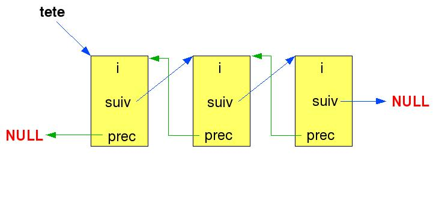

|
|
| |
|
|
Aussi simple soit-elle, la macro assert() peut-être d'une redoutable efficacité pour la mise au point lorsqu'elle est utilisée de manière systématique dans les programmes écrits en langage C.
1. PrésentationDans <assert.h>, la macro assert() est le plus souvent définie sous la forme d'un opérateur ternaire :
|
#define
assert(expr) \ |
Si l'expression passée en paramètre est vraie, la macro ne fait rien (l'appel __ASSERT_VOID_CAST(0) se traduit par la génération de (void)0) par contre si l'expression est fausse, un arrêt du programme est provoqué par l'appel à la fonction __assert_fail() qui affiche un message d'erreur (avec l'expression en cause, le nom du fichier, le numéro de ligne et le nom de la fonction où s'est produite l'erreur) avant d'appeler le service abort(). Pour mémoire, en langage C une expression est vraie si son résultat donne une valeur différente de 0. Voici un exemple de déclenchement d'un assert :
|
1 #include <assert.h> 2 3 int fct(int n) 4 { 5 assert(n != 0); 6 } 7 8 int main(int ac, char *av[]) 9 { 10 fct(0); 11 } |
Le programme va déclencher un assert dans la fonction fct() car cette dernière est appelée avec un paramètre égal à 0 :
|
> gcc -g exemple0.c > ./a.out a.out: exemple0.c:5: fct: Assertion `n != 0' failed. Abandon (core dumped) |
On voit un message d'erreur s'afficher avec toutes les informations utiles pour retrouver l'assert en question dans le code : fichier exemple0.c, ligne 5, expression « n != 0 ». Pour corriger le programme, on aimerait avoir la valeur de la variable n car tout ce que l'on sait à la lecture du message d'erreur c'est que la variable est différente de 0. Comme assert() appelle la fonction abort() pour terminer le programme, cela provoque l'émission du signal SIGABRT (numéro 6) qui par défaut génère un fichier core. On peut lancer le debugger gdb pour retrouver l'état de la mémoire et afficher la valeur de la variable au moment de l'erreur. Pour la mise au point dans de bonnes conditions, il faut compiler le programme avec les informations de debug (option « -g ») et activer la génération des fichiers core (« ulimit -c unlimited » sous bash).
|
> ulimit -c unlimited > gdb ./a.out core [...] Core was generated by `./a.out'. Program terminated with signal 6, Aborted. #0 0xffffe410 in __kernel_vsyscall () (gdb) where #0 0xffffe410 in __kernel_vsyscall () #1 0xb7dc8875 in raise () from /lib/tls/i686/cmov/libc.so.6 #2 0xb7dca201 in abort () from /lib/tls/i686/cmov/libc.so.6 #3 0xb7dc1b6e in __assert_fail () from /lib/tls/i686/cmov/libc.so.6 #4 0x080483a4 in fct (n=0) at exemple0.c:5 #5 0x080483c3 in main () at exemple0.c:10 (gdb) up 4 #4 0x080483a4 in fct (n=0) at exemple0.c:5 6 assert(n != 0); (gdb) print n $1 = 0 |
Il est possible de modifier le comportement par défaut de assert() en capturant le signal SIGABRT pour déclencher une fonction ad hoc.
On notera que la macro assert() n'est définie que si la drapeau de compilation NDEBUG n'est pas positionné. C'est le comportement par défaut. Si ce drapeau est positionné sur la ligne de compilation, alors la macro assert() est expansée en une instruction vide : (void)0. On a coutume de faire disparaître les asserts dans le programme final destiné à la production pour le rendre plus efficace car les asserts déroulent du code supplémentaire pour tester des expressions.
Il est courant de considérer un retour en erreur comme alternative à l'assert. En fait, ils ne désservent pas le même objectif.
Un retour erreur est utilisé lorsque le dysfonctionnement constaté ne porte pas atteinte à l'intégrité du programme. C'est-à-dire que l'on a détecté une mauvaise utilisation d'une fonction mais les structures de données restent cohérentes donc on refuse le service mais on se tient à disposition pour un nouvel appel. Un retour erreur est par conséquent typiquement utilisé dans les fonctions de service quand elle reçoivent des données non conformes à l'interface :
Un assert est utilisé lorsque l'on constate que le programme n'est plus en état de fonctionner correctement. Un retour erreur ne suffit pas car tout nouvel appel mènera à la même constatation ou à une aggravation du désordre constaté :
En d'autres termes, l'assert a pour but de détecter des erreurs de programmation alors que le retour erreur détecte les mauvaises utilisations des services d'un programme. Le retour erreur est un garde-fou pour l'utilisateur tandis que l'assert est un garde-fou pour le développeur.
Mais il faut quand même reconnaître que la frontière entre les deux résulte souvent d'un choix d'implémentation. En effet, s'il n'est pas conseillé de provoquer un assert qui arrête un serveur quand il reçoit un message erroné de la part d'une machine distante (souvent synonyme d'attaque de la part d'un « hacker » ou d'un problème de version de protocole), on peut tout de même provoquer un assert lorsqu'un utilisateur utilise mal une API dans le but d'aider à la mise au point du programme appelant. Dans ce dernier cas, on parle de programme instrumenté.
L'implémentation peut aussi consister à générer un retour erreur en mode nominal (drapeau NDEBUG défini) et un assert en mode mise au point (drapeau NDEBUG non défini). Au risque de se retrouver confronté a des problèmes du type :
Pour comprendre l'utilité des asserts par rapport aux retours erreur. Nous allons écrire une petite API simple qui gère une liste d'entiers doublement chaînée comme indiqué en figure 1.

L'API est composée des fonctions et données simples suivantes :
Voici le fichier d'interface de l'API (list.h) :
|
#ifndef LIST_H #define LIST_H
typedef struct entier { int i; struct entier *suiv; struct entier *prec; } entier_t;
// Tete de liste extern entier_t *tete;
// Insere un nouvel element en tete de liste extern void insere(entier_t *e);
// Enleve un element de la liste extern void enleve(entier_t *e);
// Affiche la liste des elements extern void liste(void);
#endif // LIST_H |
Voici le code source de l'API (list.c) :
|
#include <stdio.h> #include "list.h"
// Tete de liste entier_t *tete = NULL;
// Insere un nouvel element en tete de liste void insere(entier_t *e) { // Si la liste est vide if (NULL == tete) { tete = e; e->suiv = NULL; e->prec = NULL; } else // Nouvel element dans la liste { e->suiv = tete; e->prec = NULL; tete = e; } }
// Enleve un element de la liste void enleve(entier_t *e) { // Si ce n'est pas le dernier element de la liste if (e->suiv) { e->suiv->prec = e->prec; }
// Si ce n'est pas le premier element de la liste if (e->prec) { e->prec->suiv = e->suiv; } else // C'est le premier element de la liste { tete = e->suiv; } }
// Affiche la liste des elements void liste(void) { entier_t *p;
p = tete; while(p) { printf("%d\n", p->i); p = p->suiv; } } |
Voici un petit programme qui utilise cette API (main.c) :
|
#include <stdlib.h> #include "list.h"
int main(int ac, char *av[]) { entier_t *p; unsigned int i;
// Remplissage de la liste for (i = 0; i < 10; i ++) { p = (entier_t *)malloc(sizeof(entier_t)); insere(p); p->i = i; }
// Affichage du contenu de la liste liste();
// Liberation de la liste p = tete; for (i = 0; i < 10; i ++) { enleve(p); free(p); p = tete; } } |
|
> gcc -g list.c main.c > ./a.out 9 8 7 6 5 4 3 2 1 0 |
A y regarder de plus près, on remarque que l'utilisateur de l'API (l'auteur du fichier main.c) n'est pas très prudent car il fait appel à malloc() sans vérifier que le pointeur retourné est différent de NULL. Par conséquent, l'API risque de recevoir un pointeur NULL dans la fonction insere(). Il convient d'apporter des améliorations pour accroître la robustesse en testant la valeur du pointeur passé aux services.
Si on décide de garder l'interface de l'API en l'état, on considère implicitement que les fonctions insere() et enleve() ne sont pas supposées recevoir un pointeur NULL. Donc il faut mettre un assert :
|
// Insere un nouvel element en tete de liste void insere(entier_t *e) { assert(NULL != e); [...] }
// Enleve un element de la liste void enleve(entier_t *e) { assert(NULL != e); [...] } |
Mais on peut aussi modifier l'interface pour retourner une erreur en cas de paramètre égal à NULL :
|
// Insere un nouvel element en tete de liste int insere(entier_t *e) { if (NULL == e) { errno = EINVAL; return -1; } [...] return 0; }
// Enleve un element de la liste int enleve(entier_t *e) { if (NULL == e) { errno = EINVAL; return -1; } [...] return 0; } |
Les deux solutions se valent car il s'agit d'un choix de spécification de l'interface. La solution avec assert ne contraint pas l'utilisateur à tester le retour des services mais au cas ou malloc() retournerait NULL, l'assert se déclenchera. La solution avec retour erreur oblige normalement l'utilisateur à tester le retour des services. S'il ne le fait pas et que malloc() retourne NULL, alors son programme provoquera une erreur en dehors de l'API (en fait au niveau de l'instruction « p->i = i; » dans la fonction main()). L'essentiel dans ce dernier cas est que l'API est restée saine car elle s'est protégée.
Une autre solution consisterait à combiner les deux précédentes : en mode mise au point, on provoque un assert et en mode nominal, on provoque un retour erreur.
En relisant le source de l'API, on constate que l'on peut effectuer des vérifications « de routine » à divers endroits pour s'assurer que la liste chaînée est bien dans l'état attendu. Pour cela, on ajoute des asserts à des emplacements stratégiques afin d'aider au debug de l'API.
Dans la fonction enleve(), on peut vérifier que le premier élément de la liste est bien pointé par tete :
|
// Enleve un element de la liste int enleve(entier_t *e) { if (NULL == e) { errno = EINVAL; return -1; }
// Si ce n'est pas le dernier element de la liste if (e->suiv) { e->suiv->prec = e->prec; }
// Si ce n'est pas le premier element de la liste if (e->prec) { e->prec->suiv = e->suiv; } else // C'est le premier element de la liste { assert(tete == e); tete = e->suiv; }
return 0; } |
Dans la fonction liste(), on peut vérifier que le premier élément a son pointeur prec à NULL et que les éléments intermédiaires ont des pointeurs différents de NULL :
|
// Affiche la liste des elements void liste(void) { entier_t *p;
p = tete; while(p) { if (tete == p) { assert(NULL == p->prec); } else { assert(NULL != p->prec); } printf("%d\n", p->i); p = p->suiv; } } |
Si on relance la compilation et l'exécution du programme, on tombe sur un assert :
|
> gcc -g list.c main.c > ./a.out 9 a.out: list.c:78: liste: Assertion `((void *)0) != p->prec' failed. Abandon (core dumped) |
L'erreur s'est produite dans la fonction liste() juste après l'affichage du premier élément (entier 9). A la lecture du message d'erreur, on déduit que le pointeur prec du deuxième élément est NULL alors qu'il devrait pointer sur le premier élément. En allant voir dans la fonction insere() dans le cas « else » qui concerne l'insertion d'un élément quand la liste n'est pas vide, on pourra voir qu'on a oublié d'assigner le pointeur prec de l'ancienne tête de liste avec l'adresse de la nouvelle tête de liste. En passant, on voit aussi que l'on peut ajouter un assert pour vérifier que le pointeur prec de la tête de liste est bien NULL. D'où la correction suivante :
|
// Insere un nouvel element en tete de liste int insere(entier_t *e) { if (NULL == e) { errno = EINVAL; return -1; }
// Si la liste est vide if (NULL == tete) { tete = e; e->suiv = NULL; e->prec = NULL; } else // Nouvel element dans la liste { e->suiv = tete; e->prec = NULL; assert(NULL == tete->prec); tete->prec = e; tete = e; }
return 0; } |
On a ainsi démontré à quel point l'ajout d'asserts peut révéler des bugs de programmation à priori invisibles et surtout comment ils peuvent aider à la corrections des problèmes. Dans cet exemple, on n'a même pas eu besoin de lancer le debugger pour retrouver l'origine du problème !
Pour être le plus efficace possible en termes de debug, les asserts montrent toute leur puissance quand ils sont accompagnés d'une instrumentation du code. Précédemment, l'API a été augmentée de tests sur les paramètres et d'asserts sur les chaînages de la liste. Mais il faut prévoir des erreurs du style : on essaie d'insérer plusieurs fois le même élément, de retirer plusieurs fois le même élément, la mémoire a été corrompue de sorte à écraser un ou plusieurs éléments de la liste, un élément continue d'être utilisé alors qu'il a été désalloué par free()...
Considérons par exemple une évolution du programme qui insère le deuxième élément de la liste une seconde fois :
|
#include <stdlib.h> #include "list.h"
int main(int ac, char *av[]) { entier_t *p; unsigned int i;
// Remplissage de la liste for (i = 0; i < 10; i ++) { p = (entier_t *)malloc(sizeof(entier_t)); insere(p); p->i = i; }
// BUG ! On insere le 2eme element une nouvelle fois p = tete->suiv; insere(p);
// Affichage du contenu de la liste liste();
// Liberation de la liste p = tete; for (i = 0; i < 10; i ++) { enleve(p); free(p); p = tete; } } |
A l'exécution, ce programme entre dans une boucle infinie malgré les asserts précédemment ajoutés car on se retrouve avec une liste où le premier élément pointe sur le deuxième qui lui même pointe sur le premier. D'où l'affichage des chiffres 8 et 9 en continu...
|
> ./a.out 8 9 8 9 [...] |
Pour rendre l'API plus robuste (en mode mise au point tout au moins), il est nécessaire d'ajouter une instrumentation du code source. Celle-ci ne doit pas être trop intrusive dans le sens où elle ne doit pas nuire aux performances.
Pour se protéger contre les insertions et retraits multiples d'un même élément, on peut forcer à NULL les pointeurs prec et suiv au moment du retrait et s'assurer que ces pointeurs sont bien NULL au moment de l'insertion. Mais lors de la première insertion, un élément résulte d'un malloc() et il n'est donc pas initialisé. Il faut ajouter à l'API une fonction d'allocation d'un élément pour garder la maîtrise sur l'initialisation des pointeurs : alloue(). Et par conséquent, il faut ajouter sa contre-partie pour désallouer un élément : desalloue().
Pour se protéger contre les corruptions mémoire, un moyen efficace consiste à ajouter un « magic number » dans la structure de l'élément. C'est un champ initialisé à une valeur différente en fonction de l'état de la structure : alloué, chaîné, déchaîné ou désalloué. Cela fait double emploi avec les pointeurs mis à NULL mais c'est que l'on peut appeler de la protection « ceinture-bretelles » : pour être sûr que le pantalon tiendra, on met à la fois une ceinture et des bretelles.
Pour se protéger contre des erreurs de programmation, on peut aussi introduire un compteur interne du nombre d'éléments dans la liste pour s'assurer que le pointeur à NULL signifie bien que la liste est vide.
Tout le code d'instrumentation est sous le contrôle du drapeau NDEBUG pour se donner la possibilité de le faire disparaître en mode « non debug ».
Voici le nouveau fichier list.h avec les modifications par rapport à la première mouture du programme :
|
#ifndef LIST_H #define LIST_H
typedef struct entier { int i; #ifndef NDEBUG int magic; #define ALLOUE 0x552F7AC8 #define CHAINE 0x2C2F7BC8 #define DECHAINE 0x5D4FCA71 #define DESALLOUE 0x254B837C #endif // NDEBUG struct entier *suiv; struct entier *prec; } entier_t;
// Tete de liste extern entier_t *tete;
// Alloue un element extern entier_t *alloue(void);
// Desalloue un element extern void desalloue(entier_t *e);
// Insere un nouvel element en tete de liste extern int insere(entier_t *e);
// Enleve un element de la liste extern int enleve(entier_t *e);
// Affiche la liste des elements extern void liste(void);
#endif // LIST_H |
Voici le fichier list.c avec ses modifications également mises en relief :
|
#include <stdio.h> #include <assert.h> #include <errno.h> #include <stdlib.h> #include "list.h"
// Tete de liste entier_t *tete = NULL;
#ifndef NDEBUG // Nombre d'elements dans la liste static unsigned int nb_elements = 0; #endif // NDEBUG
// Alloue un element entier_t *alloue(void) { entier_t *p;
p = (entier_t *)malloc(sizeof(entier_t)); if (NULL == p) { return NULL; }
#ifndef NDEBUG p->suiv = p->prec = NULL; p->magic = ALLOUE; #endif // NDEBUG
return p; }
// Desalloue un element void desalloue(entier_t *e) { // S'assurer que le parametre est valide assert(NULL != e);
// S'assurer que l'element n'est pas chaine assert(DECHAINE == e->magic); assert(NULL == e->suiv); assert(NULL == e->prec);
// Detruire le magic number pour protection // contre reutilisation apres liberation #ifndef NDEBUG e->magic = DESALLOUE; #endif // NDEBUG
// Desallocation free(e); }
// Insere un nouvel element en tete de liste int insere(entier_t *e) { if (NULL == e) { errno = EINVAL; return -1; }
// S'assurer que c'est bien un element alloue par nos service assert(ALLOUE == e->magic);
// S'assurer que l'element n'est pas deja chaine assert(NULL == e->suiv); assert(NULL == e->prec);
// Si la liste est vide if (NULL == tete) { assert(0 == nb_elements); tete = e; e->suiv = NULL; e->prec = NULL; } else // Nouvel element dans la liste { assert(nb_elements > 0); e->suiv = tete; e->prec = NULL; assert(NULL == tete->prec); tete->prec = e; tete = e; }
#ifndef NDEBUG // Un element supplementaire dans la liste nb_elements ++;
// L'element est maintenant chaine e->magic = CHAINE; #endif // NDEBUG
return 0; }
// Enleve un element de la liste int enleve(entier_t *e) { if (NULL == e) { errno = EINVAL; return -1; }
// S'assurer que c'est bien un element alloue par nos service assert(CHAINE == e->magic);
// Si ce n'est pas le dernier element de la liste if (e->suiv) { e->suiv->prec = e->prec; }
// Si ce n'est pas le premier element de la liste if (e->prec) { e->prec->suiv = e->suiv; } else // C'est le premier element de la liste { assert(tete == e); tete = e->suiv; }
#ifndef NDEBUG // Un element en moins dans la liste nb_elements --;
// Changer l'etat de l'element e->magic = DECHAINE; e->prec = e->suiv = NULL; #endif // NDEBUG
// Verification du nombre d'elements dans la liste // par rapport a la valeur du pointeur de tete assert((NULL == tete) || (nb_elements > 0)); assert((0 == nb_elements) || (NULL != tete));
return 0; }
// Affiche la liste des elements void liste(void) { entier_t *p;
p = tete; while(p) { // Verifier qu'il n'y a pas eu de corruption memoire assert(CHAINE == p->magic);
if (tete == p) { assert(NULL == p->prec); } else { assert(NULL != p->prec); } printf("%d\n", p->i); p = p->suiv; } } |
Le programme main.c est modifié pour utiliser respectivement alloue() et desalloue() en lieu et place de malloc() et free() :
|
#include "list.h"
int main(int ac, char *av[]) { entier_t *p; unsigned int i;
// Remplissage de la liste for (i = 0; i < 10; i ++) { p = alloue(); insere(p); p->i = i; }
// BUG ! On insere le 2eme element une nouvelle fois p = tete->suiv; insere(p);
// Affichage du contenu de la liste liste();
// Liberation de la liste p = tete; for (i = 0; i < 10; i ++) { enleve(p); desalloue(p); p = tete; } } |
Après recompilation et exécution, il se produit, comme espéré, un assert au niveau de la double insertion :
|
> gcc -g list.c main.c > ./a.out a.out: list.c:65: insere: Assertion `0x552F7AC8 == e->magic' failed. Abandon (core dumped) > gdb ./a.out core [...] (gdb) where #0 0xffffe410 in __kernel_vsyscall () #1 0xb7dbf875 in raise () from /lib/tls/i686/cmov/libc.so.6 #2 0xb7dc1201 in abort () from /lib/tls/i686/cmov/libc.so.6 #3 0xb7db8b6e in __assert_fail () from /lib/tls/i686/cmov/libc.so.6 #4 0x080485cb in insere (e=0x804a0c8) at list.c:65 #5 0x080489b9 in main () at main.c:19 |
Grâce à l'introduction d'asserts et d'une instrumentation comme des compteurs, des « magic numbers » pour marquer les structures de données et d'autres mécanismes qui aident à détecter les corruptions de toute sorte, on a pu mettre en évidence des erreurs de programmation pernicieuses. L'introduction d'asserts va bien-sûr de pair avec un environnement de test car le programme cité dans cet article contient peut-être d'autres problèmes qui pourraient être mis en évidence avec des tests dignes de ce nom.
Certains reprocheront à la macro assert() de porter atteinte aux performances car elle provoque l'exécution de tests supplémentaires. On peut aussi lui reprocher de nuire à la lisibilité du code source à cause des instrumentations. Pour ne pas en abuser, il faut les positionner à des endroits stratégiques. De plus, on a vu qu'il est possible de supprimer les asserts en compilant le programme avec la définition de NDEBUG (au risque de se retrouver confronté à des bugs du type heisenbug). Toutefois, l'expérience montre que de plus en plus d'éditeurs de logiciels livrent leurs programmes avec les asserts de sorte à ce que le client puisse remonter les messages d'erreurs qui se seraient déclenchés lors d'une utilisation non prévue (schrödinbug). En effet, plus un logiciel est complexe, plus il est difficile d'avoir un environnement de test capable de prouver que le code est exempt de « bugs ».
L'utilisation des asserts est aussi un moyen efficace de se protéger contre le vieillissement d'un code source. Pour un logiciel donné, il n'est pas rare que le ou les développeurs d'origine ne soient plus les mêmes qui le modifient plusieurs mois ou années après. Les corrections ou améliorations peuvent ne pas être très rigoureuses par manque de compréhension. En conséquence, le code peut devenir de moins en moins lisible et donc souvent de plus en plus fragile pour devenir un programme qui génère de plus en plus de problèmes. Si les asserts sont systématiquement utilisés, ils vont servir de garde-fous pour aider les développeurs à comprendre et à mettre au point le logiciel car tout écart de leurs parts va provoquer des erreurs.
[1] Heisenbug : http://fr.wikipedia.org/wiki/Heisenbug
[2] Schrödinbug : http://fr.wikipedia.org/wiki/Schrödinbug